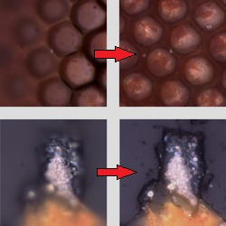
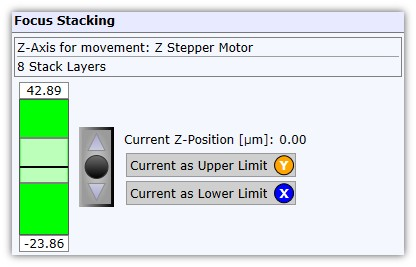

|
Video Focus Stacking
|
聚焦堆栈可在不同的 Z 位置采集多张视频图像，以计算清晰的最终图像：

为获得最佳结果，请参阅 视频聚焦堆栈常见问题。

绿色条
显示软件能够自行移动的最大 Z 范围
(默认: ±100µm, 请参阅 显微镜 Z 台范围选项)。
亮色区域显示用于聚焦堆栈的 Z 范围。
上方编辑框定义上限，下方编辑框定义下限。
摇杆
摇杆用于移动 Z 台。请注意，打开视频测量窗口时将使用软件限制的 Z 坐标。
当前作为上限
使用当前 Z 位置作为聚焦堆栈的上限。
当前作为下限
使用当前 Z 位置作为聚焦堆栈的下限。
按下开始按钮将在当前位置执行聚焦堆栈。